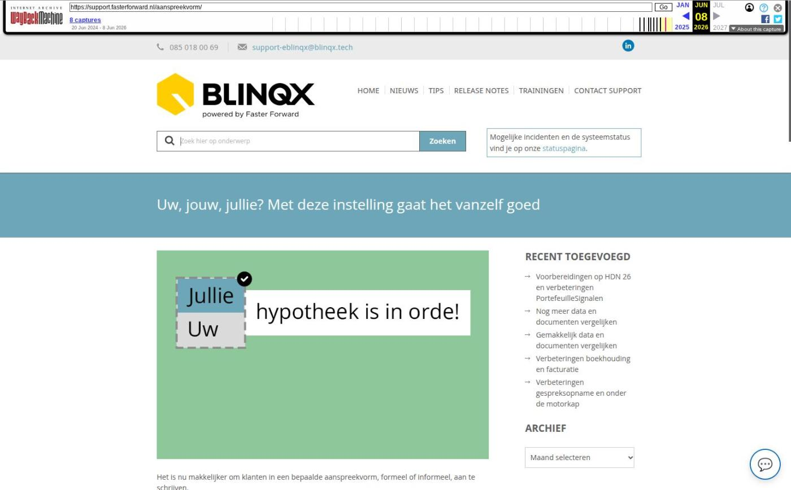

Uw, jouw, jullie? Met deze instelling gaat het vanzelf goed

Tekstinhoud
Title: Uw, jouw, jullie? Met deze instelling gaat het vanzelf goed | Support
URL: https://web.archive.org/web/20260608022453/https://support.fasterforward.nl/aanspreekvorm/
Source element: <article>
---
Het is nu makkelijker om klanten in een bepaalde aanspreekvorm, formeel of informeel, aan te schrijven.
Je kunt nu namelijk twee zaken instellen:
Formeel of informeel
Per dossier kun je 'Formeel' of 'Informeel' als aanspreekvorm instellen. Dit zorgt ervoor dat klanten automatisch met 'je' of 'u' worden aangesproken.
Meervoud of enkelvoud
Daarnaast kun je tags instellen, zodat woorden en zinsdelen automatisch in het meervoud of enkelvoud worden gezet. Zo wordt er bijvoorbeeld automatisch 'jullie' gebruikt als er meerdere volwassenen in een dossier staan.
Heb je liever dat wij dit voor je inrichten? Stuur dan een e-mail naar support@fasterforward.nl. Wij nemen dan contact met je op voor de mogelijkheden.
Voorbeeld
Formeel of informeel instellen
Meervoud of enkelvoud instellen
Tags
Lees ook
Voorbeeld
Onderstaande zin staat in een correspondentietekst.
Hierbij bevestigen we dat [jouw/jullie] renteaanbod door ons is aangevraagd bij Aegon.
Zodra de aanspreekvormen en de juiste tags zijn ingericht, wordt bij iedere communicatie vanuit het dossier automatisch de juiste tekst gemaild naar de klant.
DOSSIER EÉN PERSOON MEERDERE PERSONEN
Formeel "Hierbij bevestigen we dat uw renteaanbod door ons is aangevraagd bij Aegon." "Hierbij bevestigen we dat uw renteaanbod door ons is aangevraagd bij Aegon."
Informeel "Hierbij bevestigen we dat jouw renteaanbod door ons is aangevraagd bij Aegon." "Hierbij bevestigen we dat jullie renteaanbod door ons is aangevraagd bij Aegon."
Formeel of informeel instellen
De gewenste aanspreekvorm, formeel of informeel, stel je in bij het aanmaken van een dossier. Bij bestaande klantdossiers pas je deze aan onder het tabblad CRM – Aanspreekvorm.
Door vervolgens tags te gebruiken in e-mails en teksten wordt automatisch de juiste aanspreekvorm gebruikt.
Meervoud of enkelvoud instellen
Door de juiste tags toe te voegen aan je correspondentieteksten, wordt altijd automatisch de juiste aanspreekvorm gebruikt.
Tags
Hieronder zie je een aantal voorbeelden van de tags die je kunt gebruiken.
Bekijk hier de volledige lijst van alle beschikbare tags.
[ben je/zijn jullie]
[je logt/jullie loggen]
[blijft/blijven]
[je deze ondertekent/jullie deze ondertekenen]
[mocht je/mochten jullie]
Lees ook
Aanspreken met u of jij instellen
Tags gebruiken
Geplaatst op 19 september 2023 (Laatste update: 25 september 2023)